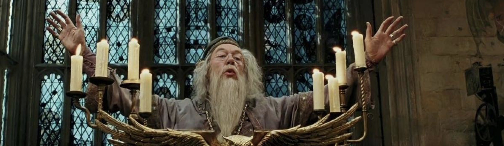
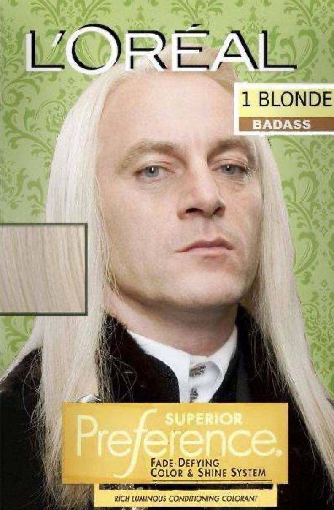

Ежедневный пророк
последние новости
На последнем собрании Проффесор Дамблдор сообщил об изменениях в учебном процессе для студентов
2-ого курса и о повышении оплаты за общежитие для иногородних студентов
Новое в Хогвартсе: Совы, факультеты и... IT-технологии!
Дорогие первокурсники Хогвартса, держитесь крепче за свои волшебные палочки! В этом году вас ждет не просто распределение на факультеты, а нечто гораздо более захватывающее. В связи с недавним объединением Хогвартса и ИТМО, среди факультетов теперь числятся новенькие — КТ (Кибер-Трансфигурация) и ИС (Информационные Совы). Для попадания на эти факультеты вам предстоит пройти загадочное тестирование, которое организуют наши пернатые друзья. Совы обещают сообщить вам детали позже. Ну что, готовы? Запасайтесь пергаментом и терпением!
Новые предметы — новый уровень волшебства!
Уважаемые студенты, готовьтесь к новым, обязательным и, несомненно, головокружительным предметам в вашей магической программе. Вот краткий список дисциплин, которые точно заставят ваши волшебные палочки гореть ярче:
- Парадигма магии — забудьте старые заклинания, настало время для современных магических концепций!
- Объектно-ориентированные заклинания — учим создавать волшебные объекты, чтобы они сами работали на вас!
- Программирование волшебных шаров — потому что кто не хочет предсказать будущее через шар, который запрограммировал сам?
- Гадание на картах Таро — когда вы устали от логики, всегда можно обратиться к мистике (и получить ответ на любой вопрос: "Куда подевался мой домашний гном?").
Каждый студент будет счастлив изучить всё это и много чего другого... ну или хотя бы не превратиться случайно в тыкву.
Е
П
Е
Т
И
Т
О
Р
Репетиторство от профессора Снейпа: Бесплатное обучение заварено!
Да-да, вы не ослышались! Наш суровый, но справедливый профессор Северус Снейп начинает репетиторство по зельеварению. Цель проста: подготовить будущих студентов Хогвартса к бесплатному обучению. Неужели нам предстоит увидеть более жизнерадостного Снейпа, радующегося успехам своих подопечных? Ну, давайте не будем делать поспешных выводов, но, по слухам, его котел уже закипает от энтузиазма.
Магическое образование за баллы и достижения — новая реальность!
Министерство магии продолжает удивлять нововведениями! В начале 2023 года был выпущен указ, согласно которому абитуриенты с волшебными достижениями или набравшие больше всего баллов на экзаменах смогут поступить в университет магии на бесплатной основе. Однако, если у вас нет этих блестящих наград, но вы всё же получили письмо от совы, не унывайте! Вам предоставят место на платной основе. Ну что ж, пора подружиться с волшебной метлой и взмахнуть палочкой, чтобы превзойти самих себя (или хотя бы своих соседей по общаге).
Скандал! Люциус Малфой стал лицом L'Oréal
А теперь к самым громким новостям! Наш всеми любимый блондин и символ аристократии Люциус Малфой подписал контракт с маггловским брендом L'Oréal. Его идеальные платиновые локоны теперь украшают рекламные плакаты маггловских салонов красоты по всему миру. И знаете что? Он этого заслужил!
"Почему именно Малфой?" — спросите вы. Ну, ответ очевиден. Кто ещё способен сочетать аристократизм, холодный взгляд и волосы, сверкающие как отражение луны на вершинах Гринготтса? В интервью для Ежедневного Пророка Люциус откровенно заявил: "Честно говоря, когда мне предложили контракт, я подумал: почему бы и нет? В конце концов, мои волосы — это символ статуса, роскоши и... магии!"
Что ж, магглы явно не ожидали такого поворота событий, но зато теперь у них есть блестящий пример настоящего магического стиля.
P.S. Если ваши волосы вдруг решили вести себя не магическим образом, спросите у Люциуса, он подскажет. Ведь, как говорит L'Oréal, "вы этого заслуживаете"!
Так что, дорогие студенты и выпускники, не забывайте следить за магическими трендами! Хогвартс меняется, предметы усложняются, а наши профессора и знаменитости всё больше покоряют как магический мир, так и маггловский!